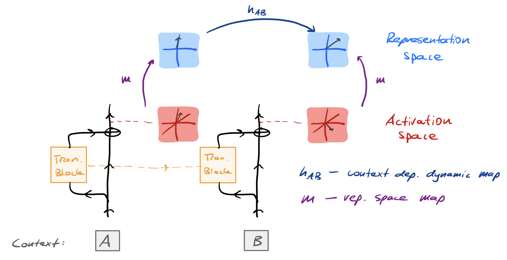

In this short note, I distinguish between two forms of linearity that are (potentially) relevant when considering trained machine learning (ML) models. Intuitively, these two forms correspond to how the ML models store and process information. The following diagram summarises the key ideas:

Linear representations
Linear representation hypothesis (LRH). ML models (trained to convergence) express features as directions in a representation space That admits a basis of interpretable features. that is related to the activation space of the ML model via a linear map.
The LHR is a statement about how ML models store information. Provided the LRH holds, it suggests a procedure for identifying the active features give the context:
- Identify the linear map from activation space to representation space.
- Identify an interpretable basis of the representation space.
- Use the linear map from activation space to representation space on the activations after observing the context.
- Decompose the image (under the linear map) of the activations in terms of the interpretable basis of the representation space identified earlier.
When assuming feature sparsity, SAEs are one way of carrying out this procedure. Point 1 & 2 corresponds to the training of an SAE and interpreting the latents, Point 3 corresponds to applying the encoder to the activations, and Point 4 corresponds to the active SAE latents.
Status of LRH. There is empirical evidence and theoretical arguments for the LRH. Further evidence is that SAEs work at all. For a counter perspective against a strong version of the LRH, see this post.
Linear dynamics
Linear dynamic hypothesis (LDH). ML models (trained to convergence) express features in a representation space such that there always exists a context-dependent linear map As we will see below, it may be convenient to slightly relax this constraint e.g., by allowing scaling by an input-dependent factor. that takes features at context position \(i\) to features at context position \(j\), where \(i < j\).
The LDH is a statement about how ML models process information. Provided the LDH holds, it suggests a procedure for transitioning between features given the context:
- Identify the map from activation space to representation space.
- Identify the context-dependent linear maps.
- Use the map from activation space to representation space on the activations after observing the context.
- Use the context-dependent linear map to transition between the relevant features at context position \(i\) to context position \(j\), where \(i < j\).
I have some ideas about unsupervised architectures to identify the linear dynamics That play a role analogous to the role of SAEs in the case of linear representations. -- I plan on writing a longer post about these at some point. Briefly, they feel like crosscoders that, instead of decoding downstream, decode across context. I am not aware of anything like this existing in the literature.
Status of LDH. Compared to the LRH, the evidence for the LDH is quite limited! I list two pieces here, in order of how convincing I think they are:
- Modular addition. There are many ways to compute modular addition, that ML models implement the version that has a linear dynamic is evidence for the LDH.
- ML models trained on (factored) (G)HMM data sources. The ground truth generative process admits a representation space (belief state geometry) that admits a scalar-weighted linear dynamic; Accordingly, this example only applies to the relaxed form of the LDH mentioned above. that the ML model learns the representation space on which this dynamic acts is evidence for the LDH.